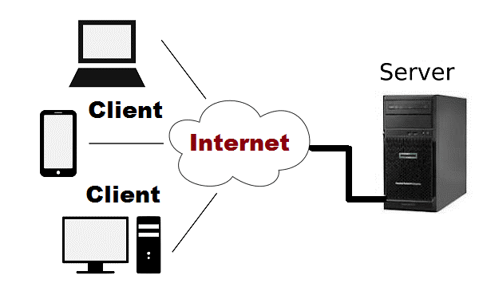

Behind ./MakeMyFuture
Peer behind the machine and find out how MakeMyFuture works!
Welcome to Behind ./MakeMyFuture! Here, we'll cover all the behind the scenes on how the website works and supply you enough information to start a tool like ./MakeMyFuture on your own! If you're looking to work on ./MakeMyFuture and join the amazing people behind the website, feel free to join our Discord and come to any of the developer meetings!
Table Of Contents
Why ./MakeMyFuture?
./MakeMyFuture was an idea originating from a project brainstorming session during a Dot-Slash club meeting. As it is well known that the transferring process can be confusing, since having so many majors and universities as options can be overwhelming, we elected to begin the development of a tool that could assist students in transferring by calculating the courses they would need. Eventually, the idea led to being an online schedule builder.
Server and Client Side Builds

The “internet” is simply a collection of computers connected to one another. In this connection, one computer is treated as the server, and one is the client. Information can travel both ways, but in general, the client requests information from the server. This “information” is the equivalent of text files which can take many forms: HTML pages, images, code, etc. The method in which the client can request or send information to a server is facilitated through the Hypertext Transfer Protocol or HTTP for short. That’s right when entering a URL into your browser, you are making a request to the server that the URL pertains to in order to request their home page (usually).
 A “server” is thus simply a computer that has resources and a list of paths on which a client can either send or request data. The server can be configured using a multitude of programming languages; a list of such languages can be found with a Google search of “Server-Side Scripting” or “Server-Side Programming Languages.” For MakeMyFuture, we used Javascript and the ExpressJS framework to run our server.
A “server” is thus simply a computer that has resources and a list of paths on which a client can either send or request data. The server can be configured using a multitude of programming languages; a list of such languages can be found with a Google search of “Server-Side Scripting” or “Server-Side Programming Languages.” For MakeMyFuture, we used Javascript and the ExpressJS framework to run our server.
A “client” facilitates their requests through Javascript only. Javascript is regarded as “the language of browsers” and can be run in a runtime environment using NodeJS. Javascript is also used to work with the Document Object Model, or DOM for short. The DOM is the interface through which HTML pages are constructed, how the elements that we view on webpages are organized on the page. To style these HTML elements in the DOM, we use Cascading Style Sheets (CSS) which allow us to choose stylistic elements such as font style, object alignment, and much, much more. Although we won’t cover a lot of the inner workings of HTML and CSS, they are still integral parts of how websites such as MakeMyFuture are displayed to the user.
Starting off with ExpressJS
To get started with building your first server, follow the steps on the README on this template Github repository. Download the repository, install NodeJS, and run the server using “npm install” and then “node app.js.” Each line of Javascript code is explained with the associated comment.
Afterward, launch up a browser and navigate to “localhost:3000” in your browser’s address bar. You should be able to access the index.html page.
And there you have it! If everything went well you are now running your very own server which is serving static HTML pages. You can take a step further and connect to the device on which you are running the server with that device’s IP address on a second device, including the port extension at the end. If you’d like to learn more about web development, be sure to join Dot-Slash CS meetings and search for information about it online!
Database Management in MongoDB
Nothing really makes the internet more special than its manipulation of data! At its simplest level, data is equivalent to text and numbers, organized into databases. Databases are provided through many online services, such as AWS, Google Cloud, and MongoDB. All of these services essentially do the same thing, providing you an API to interact with data that is stored securely somewhere in a server.
We use databases for a lot of information on MakeMyFuture, specifically profile information (your username and encrypted password), user data (all the schedules you create), and user settings. For our choice of database provider, we chose MongoDB, which works nicely within NodeJS with its MongoDB library.
To help work with Mongo's API, we have a translation library stored locally on the server which helps convert complex functions into easier and smaller functional versions. Check out the file here. Remember, when using code written by others, you should credit them for it.